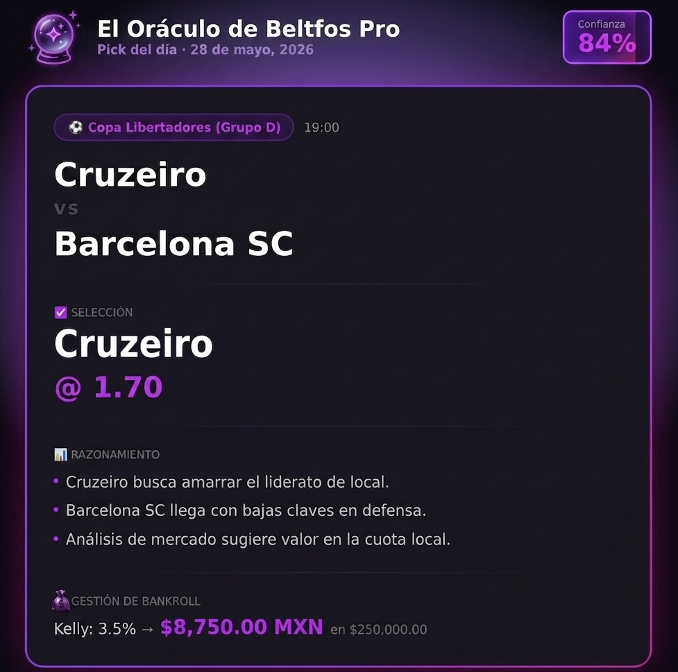

La casa de apuestas tiene datos.
Tú también deberías.
Un pick diario de fútbol con análisis predictivo completo por IA. Formas de juego, momios y señales de mercado. Todo directo a tu Telegram, 100% gratuito.
✓ Sin registros • ✓ Sin tarjetas • ✓ Canal público

La mayoría pierde apostando.
No es por mala suerte.
Las casas de apuestas gastan millones en algoritmos predictivos para fijar momios. El apostador promedio decide usando corazonadas, emociones o el consejo de "expertos" sin bases matemáticas. Es una batalla perdida desde el inicio.
El Apostador Emocional
- Aposta por su equipo favorito de forma impulsiva.
- Intenta recuperar pérdidas duplicando apuestas (Martingala).
- Sigue corazonadas o tipsters con historiales editados.
- No registra sus pérdidas ni calcula su ROI real.
- Termina en saldo negativo al final de cada mes.
El Modelo de Datos del Oráculo
- Analiza cuotas en tiempo real buscando valor esperado positivo (+EV).
- Establece niveles de confianza algorítmicos.
- Compara miles de variables históricas, lesiones y clima.
- Mantiene un registro auditable e inmutable en Telegram.
- Busca rentabilidad sostenible a mediano y largo plazo.
¿Es esto para ti?
Queremos apostadores serios que entiendan la diferencia entre jugar en el casino y aplicar un método matemático.
Es para ti si...
- Ves fútbol seguido y quieres entender mejor las dinámicas de valor.
- Apuestas o quieres empezar con una estrategia basada en matemáticas.
- Te importa ver el razonamiento y aprender el proceso detrás de cada pick.
- Entiendes que la consistencia vence a la suerte en el largo plazo.
NO es para ti si...
- Buscas resultados milagrosos o ganancias "100% garantizadas".
- Quieres apostar a ciegas sin analizar la ventaja.
- Te desesperas ante malas rachas estadísticas temporales.
- Esperas enriquecerte de la noche a la mañana.
Todo gratis en El Oráculo
Sin suscripciones mensuales, cobros ocultos ni trucos. El valor real está en la precisión de los datos.
Pick Diario + Razonamiento
Un solo pick de fútbol al día, el más claro detectado por el modelo. Acompañado de su desglose de variables.
Análisis del Modelo
Monitoreamos el rendimiento reciente de equipos (H2H), estado físico de jugadores clave y flujos de dinero en las casas.
Pipeline de Datos Real
Una arquitectura tecnológica real que recopila estadísticas oficiales y calcula el valor esperado objetivo de forma automatizada.
Auditoría Transparente
Publicamos el resumen de aciertos y fallos cada semana. Sin manipular el historial. Nuestras derrotas son visibles.
Ligas de Mayor Cobertura
Nos enfocamos en Liga MX, Champions League, Premier League, LaLiga y Bundesliga, donde los mercados son más líquidos y estables.
Comunidad Exclusiva
Únete a miles de personas que comparten análisis, discuten cuotas, gestionan su bank y aprenden estadísticas reales de juego.
De los datos al pick.
Cada mañana.
Un pipeline estructurado que extrae información oficial, calcula simulaciones y entrega el veredicto antes de que empiece tu día.
El Modelo Analiza (6:00 AM)
El algoritmo descarga cuotas de casas de apuestas globales como Pinnacle y Bet365. Paralelamente, ingiere estadísticas de API-Football incluyendo H2H, bajas por lesión y alineaciones probables.
Simulación Neuronal (6:30 AM)
El sistema ejecuta 10,000 simulaciones de montecarlo para cada partido programado. Calcula las probabilidades implícitas de cada mercado de apuesta y las contrasta con los momios reales para encontrar desajustes matemáticos (+EV).
Selección y Publicación (7:00 AM)
Se selecciona únicamente el evento que presenta el mayor margen de ventaja y confianza. Se publica de forma automática en el canal de Telegram con la cuota de referencia, nivel de confianza y el desglose de argumentos.
Recap y Registro Semanal
Todos los fines de semana recopilamos los aciertos y fallos reales, actualizando de forma abierta el porcentaje de ROI del mes. Las pérdidas nunca se ocultan.
Preguntas Frecuentes
Resolvemos tus dudas sobre el modelo predictivo, Telegram y el manejo de tus predicciones.
El modelo utiliza un pipeline automatizado de machine learning. Mapea la historia head-to-head (H2H) de los equipos, el peso estadístico de bajas y retornos de jugadores clave, factores de localía, la fatiga del plantel por partidos acumulados, y variaciones de momios de apertura frente a cierre. Si el modelo detecta que la probabilidad matemática de un suceso es superior a la reflejada por las cuotas de la casa de apuestas, se considera un pick de valor (+EV).
No, ninguno. Todo el contenido distribuido en el canal de Telegram "El Oráculo De Beltfos" es de acceso público y gratuito. Nuestro objetivo es demostrar el valor real de aplicar modelación de datos a los pronósticos deportivos sin requerir suscripciones costosas.
Nos enfocamos en ligas con grandes volúmenes de datos oficiales y mercados de cuotas con alta liquidez. Esto incluye a la Liga MX (México), Champions League, Premier League (Inglaterra), LaLiga (España), Serie A (Italia) y Bundesliga (Alemania). Evitamos ligas de divisiones inferiores o ligas exóticas debido a la volatilidad de los datos y momios menos estables.
El modelo toma como referencia los momios competitivos mundiales de Pinnacle, Bet365 y Caliente. Recomendamos utilizar casas que ofrezcan momios altos para apuestas simples de handicap asiático y goles totales, y que respeten a los apostadores ganadores en el largo plazo.
El ROI (Return on Investment) o Retorno de la Inversión mide el porcentaje de beneficio o pérdida obtenido en relación con el total de dinero apostado. Un ROI del +18.4% significa que por cada $100 apostados colectivamente siguiendo las indicaciones, has obtenido $18.40 netos de ganancia. Es la única métrica real y transparente de éxito en los pronósticos deportivos, a diferencia de los tipsters que solo reportan rachas de victorias puntuales.
Deja de apostar a ciegas.
Únete al Oráculo de Beltfos y experimenta los pronósticos basados en algoritmos predictivos reales. Gratis hoy, gratis siempre.
Probar el Oráculo